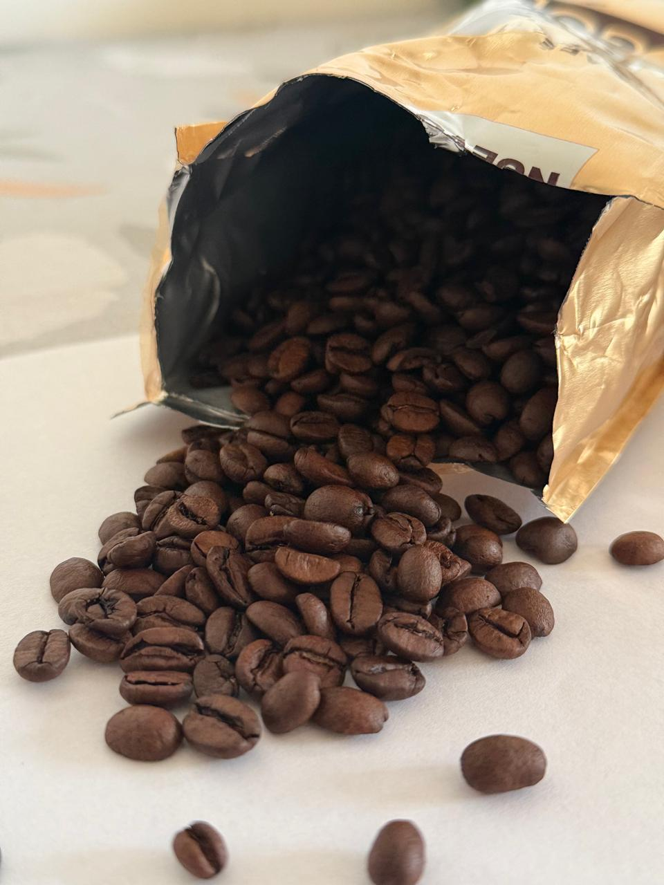

El grano de cafe
El grano de café es en realidad la semilla de la planta del cafeto, un arbusto que crece en regiones tropicales y subtropicales situadas en la franja conocida como el Cinturón del Café. Esta pequeña semilla es el núcleo de una de las bebidas más consumidas y valoradas en todo el mundo, movilizando una industria global multimillonaria y definiendo culturas culinarias enteras.
El viaje de un grano de café comienza dentro de una fruta roja y brillante llamada "cereza de café". Cada cereza contiene habitualmente dos semillas enfrentadas por su lado plano. El proceso para extraerlas requiere precisión y cuidado, dividiéndose principalmente en dos métodos: el proceso seco (o natural), donde la fruta se seca entera al sol, y el proceso húmedo (o lavado), donde la pulpa se elimina con agua antes del secado. Estas técnicas influyen drásticamente en el perfil de sabor final, aportando notas más frutales y dulces en el primer caso, o una acidez más limpia y brillante en el segundo.

Beneficios del grano verde (Sin Tostar)
- Altísima concentración de ácido clorogénico: El tueste destruye gran parte de este compuesto. En el grano verde, el ácido clorogénico permanece intacto, actuando como un potente antioxidante y antiinflamatorio.
- Control del azúcar y metabolismo: Ayuda a regular los niveles de glucosa en la sangre y estimula la utilización de grasas como fuente de energía (efecto termogénico)
- Efecto saciante: Reduce la ansiedad por comer y ayuda a controlar el apetito entre comidas.
Beneficios de comprar café en grano para moler en casa
- Cero oxidación y mayor vida útil: El grano entero actúa como una cápsula protectora natural. Al no estar molido, ofrece menos superficie de contacto con el oxígeno, reteniendo sus aceites esenciales, aromas y nutrientes intactos por meses.
- Pureza garantizada: Al ver el grano entero, tienes la certeza absoluta de que estás consumiendo café puro, libre de aditivos, harinas o mezclas adulteradas que a veces se camuflan en los cafés molidos industriales de baja calidad.
- Máxima experiencia sensorial: Moler el grano justo antes de la preparación libera más de 800 compuestos aromáticos en su punto más fresco, multiplicando los beneficios estresores y el placer de la bebida.